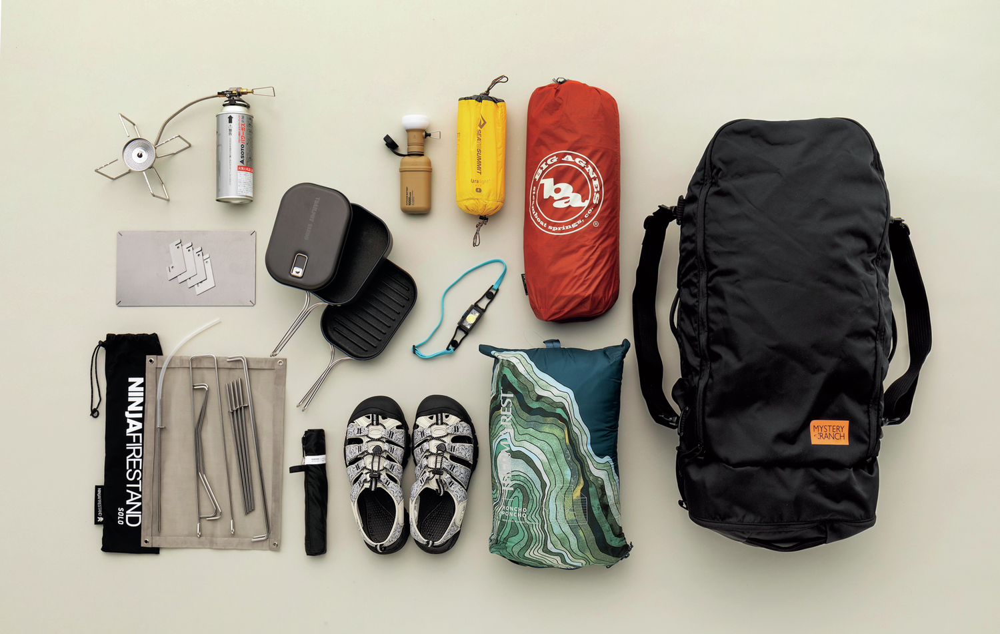
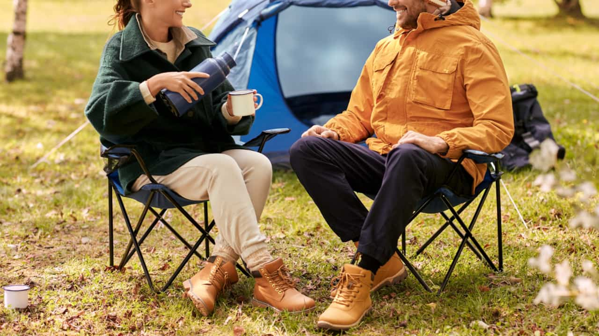
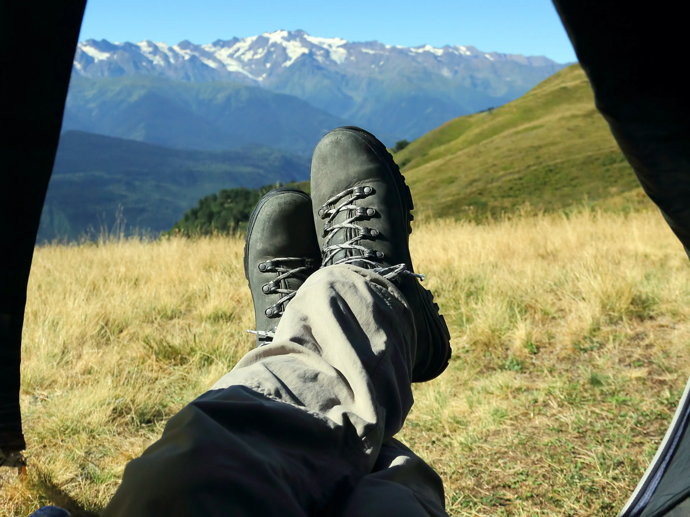
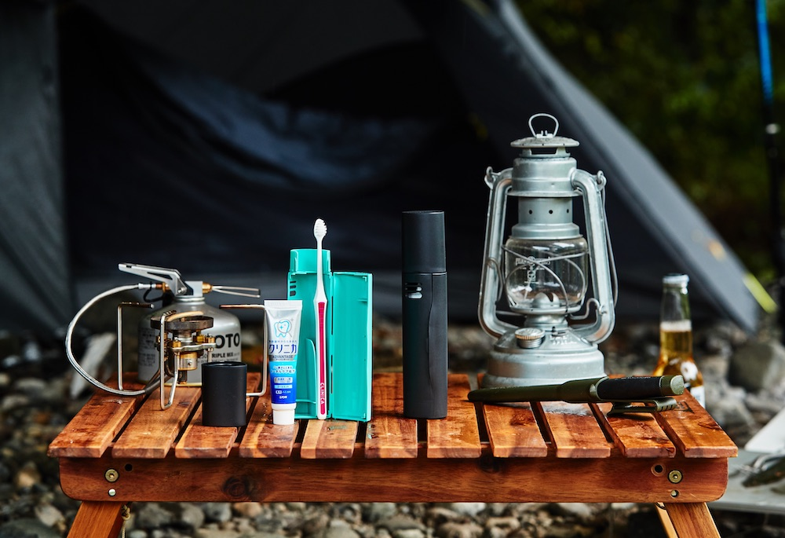

Với những ai chưa từng đi camping, việc chuẩn bị thường là phần khiến nhiều người lo lắng nhất. Không biết cần mang gì, sợ thiếu đồ, sợ mang quá nhiều thứ không cần thiết.
Thực tế, lần đầu đi camping ở Nhật không cần chuẩn bị quá phức tạp. Quan trọng nhất là chuẩn bị đúng những thứ cơ bản, phù hợp với thời tiết và thời gian chuyến đi.
Dưới đây là checklist đơn giản dành cho người mới bắt đầu.
1. Trang phục – ưu tiên thoải mái và giữ ấm
Trang phục là yếu tố quan trọng nhất khi đi camping, đặc biệt là buổi tối và ban đêm.
Bạn nên chuẩn bị:
- Quần áo thoải mái, dễ vận động
- Áo khoác giữ ấm (kể cả mùa xuân hoặc đầu hè)
- Áo dài tay mỏng để chống gió, côn trùng
- Vớ dày, giữ ấm chân
- Mũ hoặc khăn mỏng
Lưu ý: Nhiệt độ ban đêm ở bãi camping thường thấp hơn trong thành phố, ngay cả khi ban ngày khá ấm.
2. Giày dép phù hợp
Nên chọn:
- Giày thể thao hoặc giày đi bộ
- Đế chắc, không trơn trượt
Tránh:
- Giày mới chưa đi bao giờ
- Giày đế trơn hoặc quá cứng
Việc đi lại trên nền đất, sỏi hoặc cỏ sẽ thoải mái hơn rất nhiều nếu giày phù hợp.
3. Đồ dùng cá nhân cần thiết
Những vật dụng cá nhân bạn nên mang theo:
- Bàn chải, kem đánh răng
- Khăn mặt, khăn tắm nhỏ
- Giấy ướt, khăn ướt
- Thuốc cá nhân (nếu có)
- Sạc điện thoại, pin dự phòng
Dù bãi camping ở Nhật khá đầy đủ, nhưng đồ cá nhân vẫn nên tự chuẩn bị để cảm thấy yên tâm hơn.
4. Đồ ăn và nước uống
Với chuyến camping ngắn (1 đêm), bạn không cần chuẩn bị quá cầu kỳ.
Gợi ý:
- Nước uống đủ dùng
- Đồ ăn đơn giản, dễ bảo quản
- Snack hoặc đồ ăn nhẹ
Nếu có nấu ăn, nên chọn những món:
- Dễ chế biến
- Không cần nhiều dụng cụ
- Không tốn nhiều thời gian
5. Những món không cần mua ngay lần đầu
Người mới thường nghĩ phải mua rất nhiều đồ camping ngay từ đầu. Thực tế, bạn chưa cần mua:
- Lều đắt tiền
- Bếp nấu chuyên dụng
- Đèn camping cao cấp
- Bàn ghế camping cỡ lớn
Những món này chỉ thật sự cần thiết khi bạn đi camping thường xuyên.

6. Chuẩn bị về tinh thần
Camping không giống ở khách sạn. Bạn nên chuẩn bị tâm lý rằng:
- Sẽ không quá tiện nghi
- Có thể có côn trùng
- Buổi tối khá yên tĩnh và lạnh
Bù lại, bạn sẽ có:
- Không gian riêng
- Thời gian nghỉ ngơi đúng nghĩa
- Trải nghiệm gần thiên nhiên rất khác so với cuộc sống hằng ngày
7. Một vài lời khuyên cho người mới
- Nên đi camping 1 đêm trước, không nên đi dài ngày
- Chọn bãi camping được quản lý tốt
- Đi vào mùa thời tiết dễ chịu (xuân hoặc thu)
- Nếu có thể, nên đi cùng người có kinh nghiệm
Lần đầu đi camping không cần hoàn hảo.
Chỉ cần chuẩn bị vừa đủ và đi với tâm thế thoải mái.
Gợi ý cho người mới
Nếu bạn thấy camping thú vị nhưng chưa sẵn sàng tự chuẩn bị mọi thứ, Camp Nhà Thỏ có các chuyến camping theo hình thức camping share, phù hợp cho người mới hoặc đi một mình. Thông tin chi tiết được cập nhật tại lịch trình.